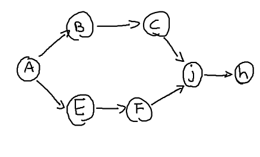
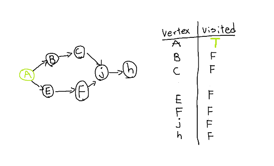
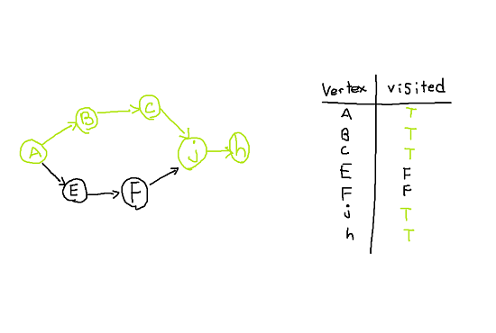
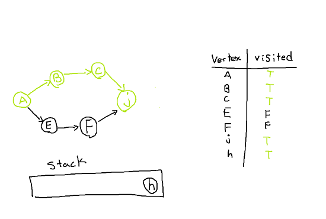
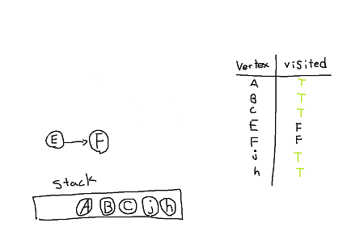
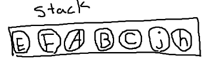

Topological Sort:
date posted: 2020-02-02
Topological sort
By definition topological sort is linear ordering of vertices such that for every directed edge (u,v), vertex u must come before v in the ordering.
One simple analogy is taking courses in University. Most courses have pre-requisites therefore you must satisfy all pre-requisites before taking more advanced course. Topological sort would be used for ordering courses so that pre-requisites would be met.
Before moving on to an example note that topological sort only works when graph is directed acyclic graph (DAG).
Let's go through an example. Looking at graph below we notice that it is directed and acyclic.
lets think of each vertex as courses we need to take in order to graduate, course B and E needs A as pre-requisite and C need B as pre-requisite and so on...
So our goal is to order courses so that unsatisfied pre-requisite problem never arise.
There are two ways of performing topological sort which are by using:
- Stack
- Queue
First we will go over above example by using stack data structure following steps below:
- Find a starting point, vertex with lowest in-degree.
- mark starting point as "visited" and go to next neighbour.
- now mark 2nd vertex as "visited" and move to its neighour
- follow these steps until vertex with no out-going edge is found
- input vertex with no out-going edge into the stack and move backwards
- repeat above steps until no more vertices are left.
1.Vertex with lowest in-degree is vertex A. So mark A visited and move onto its neighbour,
either B or E does not matter.

2.Goto next neighbour vertex B, mark it "visited" and move on
3,4.Visit neighbours until vertex has no out-going edge.

5. Since H do not have any out-going edge insert into stack.
Now j has no out-going edge so insert it to stack

Keep moving backwards and insert into stack accordingly thus left with vertex E and F.
6. Repeating steps on remaining graph.
1. Vertex E has 0 in-degree and F has 1 in-degree. Start from vertex E, mark it visited and move on. Since F is last vertex with no out going edge stop there and move backwards inserting F then E into the stack.
We are done ordering vertices. Since it is in stack data structure we need to